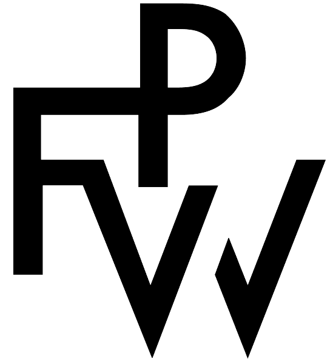
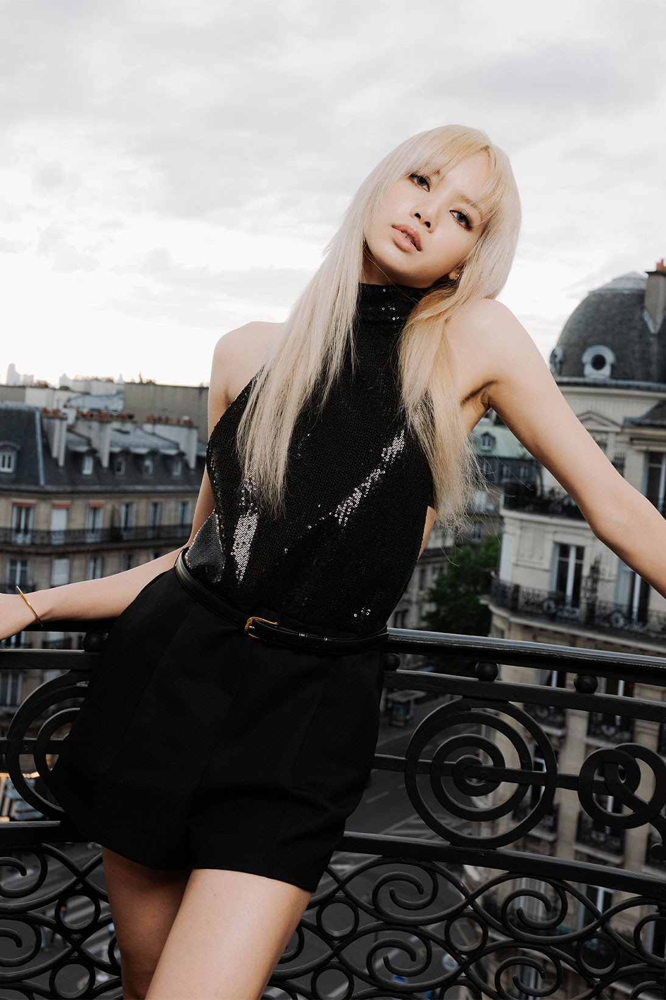
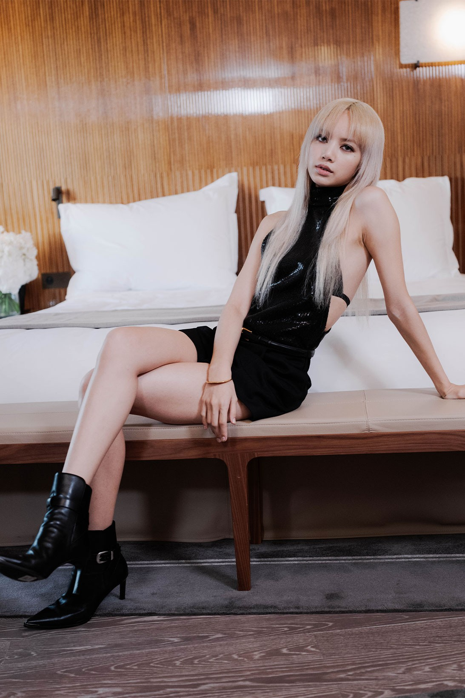
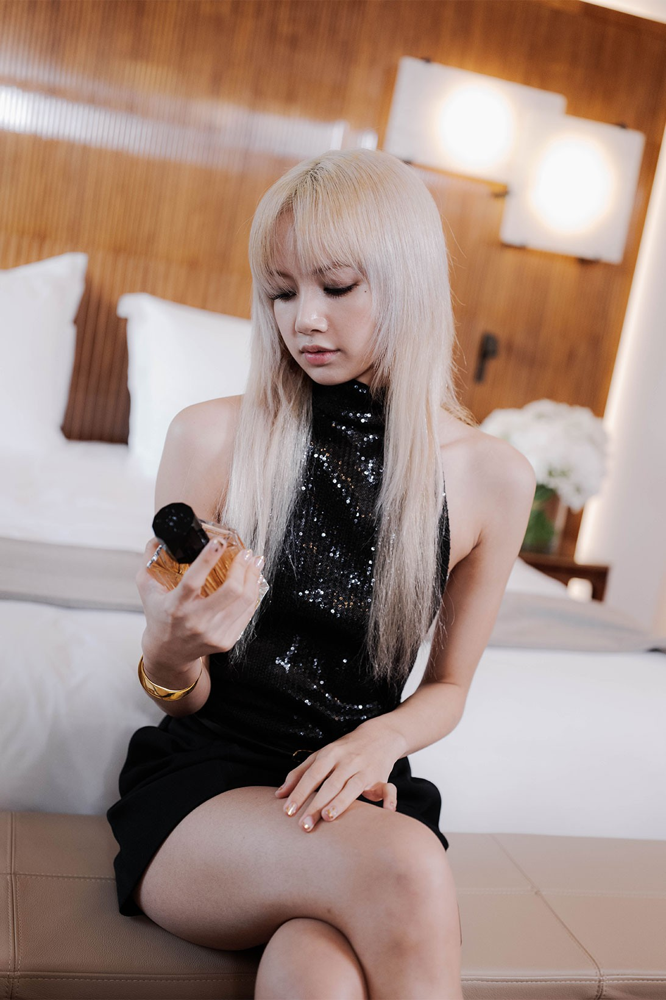

CELINE Returns to Paris Fashion Week
The Celine Summer 2023 collection - codified by the house as CELINE 15 - closed Paris
Fashion Week on Sunday with a return-to-form show at the Palais de Tokyo.
As is often the case with Hedi Slimane- Celine’s creative, artistic and image director -
there were layers to reveal.
It was the 20th anniversary of his first show at the venue (that would have been his
second collection for Dior Homme, in 2002),
and the 20th anniversary of the Palais itself.
Titled , ‘Dysfunctional Bauhaus’, the runway, typically blended music and art with the sartorial.
An original soundtrack called ‘Design’ was performed, written and arranged by the ascendant band Gustaf,
while mega-famous Lisa from Blackpink and V from BTS sat front row. Artworks from David Weiss,
Alyssa Estay and Renata Petersen were integrated across the collection.
As a total work in the CELINE manner, the each element contributed to a high-octane frisson,
allowing the clothes themselves,
irreverent and rock-n-roll, to give off an extra charge.
Hedi Slimane closed Paris Fashion Week Men’s for the Spring/Summer 2023 season
at the Palais de Tokyo,
inviting celebrity guests such as BTS‘ V and BLACKPINK‘s Lisa.
Shortly after the presentation,
we received a closer look at the K-pop rapper’s
look as she got ready for the event as the house’s global ambassador.
  
TAKE A BTS LOOK AS BLACKPINK LISA
GETS READY FOR CELINE'S SS23 SHOW
Everything from her outfit to her hair and makeup.
The musician’s latest hair update is straight platinum blonde hair with wispy bangs. She styled her look with an all-black ensemble, featuring a sequined backless top and adding a touch of contrast with black shorts. The star completed her look with a pair of pointed ankle boots. As for makeup, Lisa went Parisian chic with smoky eyes and nude, natural lips on a matte base. Take a BTS look as Lisa got ready for CELINE’s SS23 menswear show in the gallery above.